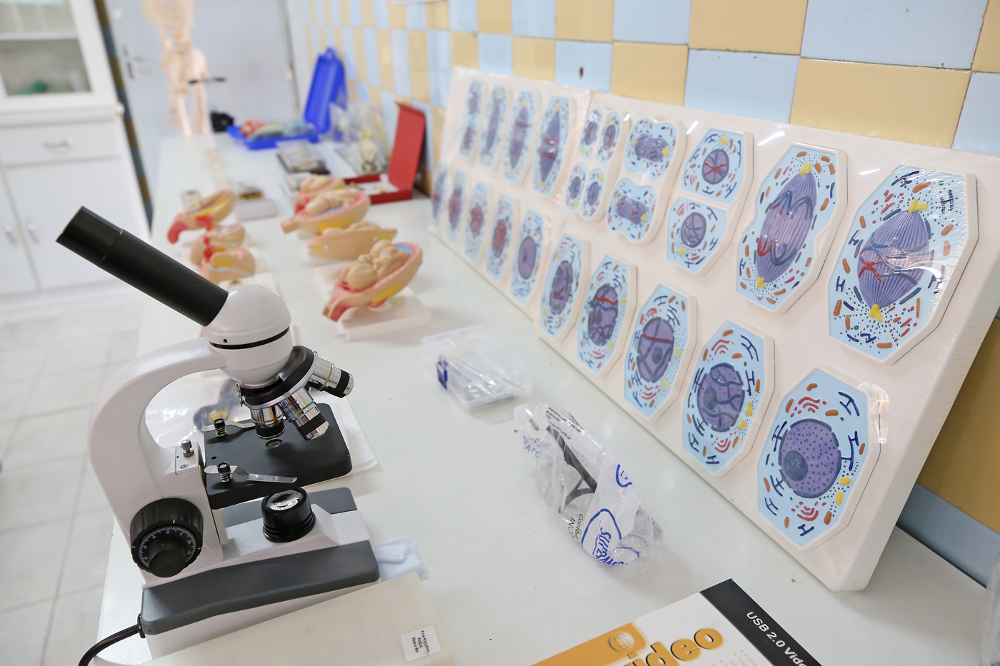

Introdução as Práticas Laboratoriais
Cuidados Gerais no Laboratório de Ciências
1. Evite realizar atividades sozinho, pois a outra pessoa poderá prestar socorro caso ocorra algum acidente. Sempre trabalhe com atenção, calma e responsabilidade.
2. Não utilize equipamentos ou materiais não autorizados.
3. Em caso de acidente ou condições de risco, comunicar imediatamente ao professor.
4. Verifique a tensão elétrica da rede (220 V) antes de ligar os equipamentos. Ao término das atividades os equipamentos deverão permanecer desconectados.
5. É obrigatório e de responsabilidade do usuário do laboratório a utilização dos Equipamentos de Proteção Individual – EPI, quando disponibilizado.
6. Utilize ferramentas adequadas ao trabalho, evitando usar a boca, dedos ou outras partes do corpo para cortar, desencapar, amassar, apertar, abrir e etc.
7. Ao término das atividades, procure deixar os equipamentos em cima das bancadas, para que o professor possa recolhê-los.
8. Quando o equipamento estiver com problemas, ou mal funcionamento, comunique o professor e/ou técnico, para que faça a substituição.
9. Antes de iniciar uma atividade experimental, é importante que os alunos acompanhem as orientações fornecidas pelo professor.
Cuidado com Utilização de Reagentes
1. Só utilizar reagentes químicos de frascos devidamente identificados. Leia corretamente os rótulos.
2. Não provar ou engolir reagentes ou soluções do laboratório.
3. Não deixar frascos de reagentes abertos. Tenha a certeza de que os fechou corretamente.
4. Evitar qualquer contato dos reagentes com a pele. Caso ocorra, lave imediatamente o local com água corrente (torneira) e avise ao professor.
5. Nunca cheire diretamente nos frascos.
6. Não trabalhar com materiais defeituosos, principalmente os de vidro.
7. Solicitar limpeza imediata de qualquer derramamento de produtos químicos.
Instrumentos de Medição de Tempo
Cronômetro: Um cronômetro, que é uma forma de contador, é um relógio de precisão que se usa para medir fracções de tempo bastante pequenas.
Instrumentos de Medição de Comprimento
Régua: Régua é um instrumento utilizado em geometria, próprio para traçar segmentos de reta e medir distâncias pequenas. Também é incorporada no desenho técnico e na Engenharia. É composta por uma lâmina de madeira, plástico ou metal e pode conter uma escala, geralmente centimétrica e milimétrica.
Paquímetro: O paquímetro é um instrumento usado para medir as dimensões lineares internas, externas e de profundidade de uma peça, normalmente de tamanho pequeno.
A ferramenta, na sua versão mais comum, que é conhecida como paquímetro universal, consiste em uma régua graduada com encosto fixo, sobre a qual desliza uma outra peça, chamada de cursor, que conta com encostos móveis. Além disso, também conta com a haste de medida de profundidade.
Trena ou fita métrica é uma régua flexível e é usada para medir a distância.
Pode ser feita por uma fita de pano, plástico, fibra de vidro ou de metal, com marcações lineares. É uma ferramenta comum de medição. O seu design permite fazer grandes medidas de comprimento ou fazer medidas em torno de curvas e cantos, mas permitindo também carrega-la no bolso ou no kit de ferramentas. Hoje ela está muito presente no dia a dia,aparecendo na forma de chaveiros ou em miniatura. Pesquisadores usam fitas de medidas de mais de 100 m de comprimento.
Instrumentos de Medição de Massa e Temperatura
Balança: Balança é um instrumento que mede a massa de um corpo. A unidade usual para massa é o kg, por se tratar de uma unidade do SI. Portanto, o correto é dizer que as balanças medem as massas dos corpos e objetos, não o peso deles.
Termômetro: O termômetro ou termómetro é um aparelho usado para medir a temperatura ou as variações de temperatura. É um instrumento composto por um elemento sensor que possua uma propriedade termométrica, isto é, uma propriedade que varia com a temperatura.
Instrumentos de Medição de Variáveis Elétricas
Multímetro: O multímetro é um aparelho de medida elétrica, capaz de realizar a medição elétrica de três tipos diferentes: Voltímetro, Ohmímetro e Amperímetro.
Essa ferramenta é capaz de medir:
• Corrente elétrica (contínua e alternada) – função amperímetro
• Tensão elétrica (contínua e alternada) – função voltímetro
• Resistência elétrica - função ohmímetro
Instrumentos de Medição de Ph
pHmetro: O pHmetro ou medidor de pH é um aparelho usado para medição de pH.
Instrumentos Ópticos
Microscópio: O microscópio é um instrumento óptico com capacidade de ampliar imagens de objetos muito pequenos graças ao seu poder de resolução. Este pode ser composto ou simples: microscópio composto tem duas ou mais lentes associadas; microscópio simples é constituído por apenas uma lente.
Lupa: A lupa é um instrumento óptico munido de uma lente com capacidade de criar imagens virtuais ampliadas. É utilizada para observar com mais facilidade pequenos objetos e alguns detalhes ou superfícies. Também denominada microscópio simples, é constituída de uma única lente convergente.
Algumas Vidrarias do Laboratório
BÉQUER: É de uso geral e pode ser utilizado em líquidos e misturas com ou sem ocorrência de reação, para dissolver sólidos em líquidos e aquecer as substâncias
PROVETA: Também é utilizada para medir o volume de líquidos e soluções líquidas, além de realizar transferências com mais fácil manuseio que as pipetas, porém a sua graduação volumétrica é menos precisa.
PIPETA GRADUADA: Serve para medir e transferir pequenos volumes de líquidos.
TUBO DE ENSAIO: É usado para testar reações e aquecer substâncias em pequena escala
BALÃO VOLUMÉTRICO: possui uma graduação volumétrica com maior precisão. Mas o volume é único e fixo, sendo descrito na parte externa do balão.
ERLENMEYER: Usado para preparar soluções e aquecer líquidos, além de armazená-las. Por ter a boca mais estreita, é de fácil manuseio, por isso é muito utilizado em titulações.
KITASSATO: É usado em filtrações a vácuo, sendo acoplado por uma mangueira a uma trompa de água, que arrasta parte do ar da parte inferior do kitassato, criando uma região de baixa pressão dentro dele que provoca um processo de sucção e acelera a filtração.
PLACA DE PETRI: Em laboratório de Biologia é utilizado para desenvolver meios de cultura bacteriológicos, para observar a germinação das plantas e de grãos de pólen ou o comportamento de pequenos animais
Símbolos de Advertência

Caderno de Laboratório
Um caderno de laboratório é o registro primário da pesquisa científica. Os/as pesquisadores(as) usam o caderno de laboratório para documentar suas hipóteses, experiências e os analises e interpretações dos resultados. O caderno serve também como uma ferramenta organizacional e também pode ajudar a proteger a propriedade intelectual produto dessas pesquisas.